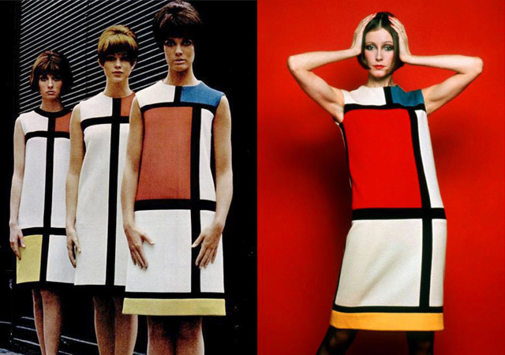
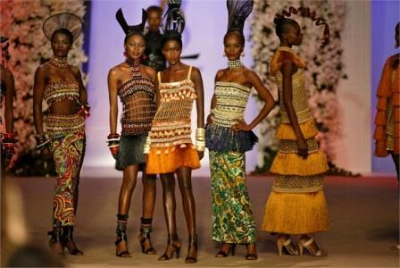
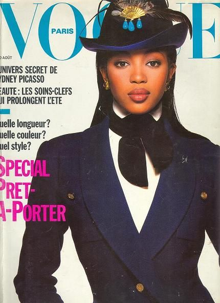

Он - одна из самых важных и противоречивых фигур в мире моды. Немногих людей узнают по трем простым буквам, но ему это удалось — YSL.
Ив Сен Лоран в 21 год уже возглавил модный дом «Dior», а в 26 основал свой собственный бренд. Он был не просто талантливым дизайнером, но и принес в мир моды множество элементов, которые совершили настоящий переворот и остаются популярными и сегодня.Итак - лучшие моменты в карьере великого Ив Сен Лорана.
ПРОЗРАЧНЫЕ БЛУЗКИ
Элемент одежды, который сегодня можно встретить в любом магазине, в 1962 году вызвал огромный скандал. Впрочем, такая реакция на откровенность прозрачных блузок ничуть не смутила Ив Сен Лорана. Дизайнер всегда был уверен, что знает, что нужно женщинам лучше их самих. К тому же, он всегда восхищался женским телом и пытался это подчеркнуть. Поэтому совершенно не обращал внимания на критику, и был прав: со временем прозрачная блузка вошла в историю моды.
КОЖАНЫЙ ЖАКЕТ
Невероятно модный сегодня элемент верхней одежды был предложен Ив Сен Лораном еще в 1962 году. Именно тогда он одел своих моделей в черные кожаные куртки. Позже Сен Лоран не раз использовал кожу в своих коллекциях. Поэтому одежде из кожи мы тоже во многом обязаны Ив Сен Лорану.
БОТФОРТЫ
Это еще один мужской элемент, которым Ив Сен Лоран начал дополнять женские коллекции. Благодаря этому дизайнеру сегодня практически каждая женщина имеет в своем гардеробе высокие сапоги.
КОЛЛЕКЦИЯ МОНДРИАН
Ив Сен Лоран создал коллекцию Мондриан в 1965 году, как дань художникам-модернистам. Дизайнера вдохновили полотна голландского абстракциониста Пита Мондриана. Его картины были перенесены в качестве принтов на ткани, таким образом став первыми произведениями живописи, перенесенными на одежду.
ЖЕНСКИЙ СМОКИНГ
«Женский смокинг – часть стиля, а не прихоть моды. Ведь мода меняется, а стиль вечен».
В 1966 году публика была шокирована, увидев женскую модель в смокинге от Yves Saint Laurent. До этого данная часть гардероба считалась исключительно мужской. Но такое революционное нововведение пришлось по вкусу ценителям моды, и женский смокинг стал обязательной частью гардероба стильной женщины. Настоящую славу коллекции «Le Smoking» подарил знаменитый фотограф Хельмут Ньютон, использовавший её наряды в фотосессии для журнала «Vogue». После этого в смокингах от YSL на публике появились Катрин Денев, Франсуаза Арди, Лайза Миннелли и другие знаменитости.
АФРИКАНКСИЙ СТИЛЬ
Несмотря на то, что пребывание в Африке стоило Ив Сен Лорану серьезных проблем с психическим здоровьем, всё же те 20 дней военной службы смогли дать ему и вдохновение для новой коллекции. В 1967 году он представил миру революционные на то время наряды, дополненные традиционными африканскими украшениями, в особенности деревянными бусами ярких цветов. А моделей на подиуме украшали традиционные высокие африканские прически. Позже Ив Сен Лоран купил себе дом в Марракеше. А его коллекция в африканском стиле и по сей день считается одной из лучших в карьере дизайнера.
ТЕМНОКОЖИЕ МАНЕКЕНЩИЦЫ
Нетрудно понять, что общественное мнение никогда не тревожило кутюрье. Поэтому он стал причиной еще одного скандального нововведения 1980-х — темнокожих моделей. «Черная пантера» Наоми Кэмпбелл начала свою модельную карьеру на показе коллекции YSL. А в августе 1988 года её фотография украшала обложку французского Vogue. И этому она также обязана кутюрье, который устроил настоящий скандал в редакции и угрожал забрать всю свою рекламу из журнала, если они не разместят на обложке фото Кэмпбелл.
Ив Сен Лоран, неизменно возглавлявший дом «Yves Saint Laurent», отошел от дел в январе 2002 года. Великий кутюрье ушел из жизни 1 июня 2008 года в возрасте 71 года в Париже после продолжительной болезни. Но работа дизайнера и по сей день вызывает восхищение и пользуется популярностью. На подиумах и в бутиках мы часто встречаем яркие платья, прозрачные блузы, брючные костюмы и другие элементы, которые привнес в мир моды Ив Сен Лоран.